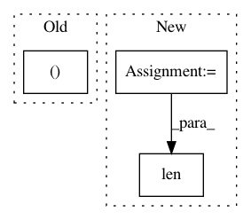

5c81c1c3138d296b8ac5f836e118cfb849b7bf5d,softqlearning/algos/softqlearning.py,SoftQLearning,_evaluate,#SoftQLearning#Any#,464
Before Change
("Alpha", self._alpha),
("DiscountedReturnAvg", average_discounted_return),
("TotalReturnAvg", np.mean(total_returns)),
("TotalReturnMin", np.min(total_returns)),
("TotalReturnMax", np.max(total_returns)),
("TotalReturnStd", np.std(total_returns))
])
After Change
]
episode_lengths = [
len(p["rewards"]) for p in paths
]
statistics = OrderedDict([
In pattern: SUPERPATTERN
Frequency: 3
Non-data size: 3
Instances
Project Name: rail-berkeley/softlearning
Commit Name: 5c81c1c3138d296b8ac5f836e118cfb849b7bf5d
Time: 2018-05-22
Author: haarnoja@berkeley.edu
File Name: softqlearning/algos/softqlearning.py
Class Name: SoftQLearning
Method Name: _evaluate
Project Name: rail-berkeley/softlearning
Commit Name: 2ccceaf73c447a99d37ad64b2b7999383ccebbd0
Time: 2018-07-04
Author: azhou42@berkeley.edu
File Name: softlearning/policies/gaussian_policy.py
Class Name: GaussianPolicy
Method Name: actions_for
Project Name: rail-berkeley/softlearning
Commit Name: 0b47129713e8cd63c49a0c53202f2b3deac941cc
Time: 2018-07-09
Author: azhou42@berkeley.edu
File Name: softlearning/policies/latent_space_policy.py
Class Name: LatentSpacePolicy
Method Name: actions_for